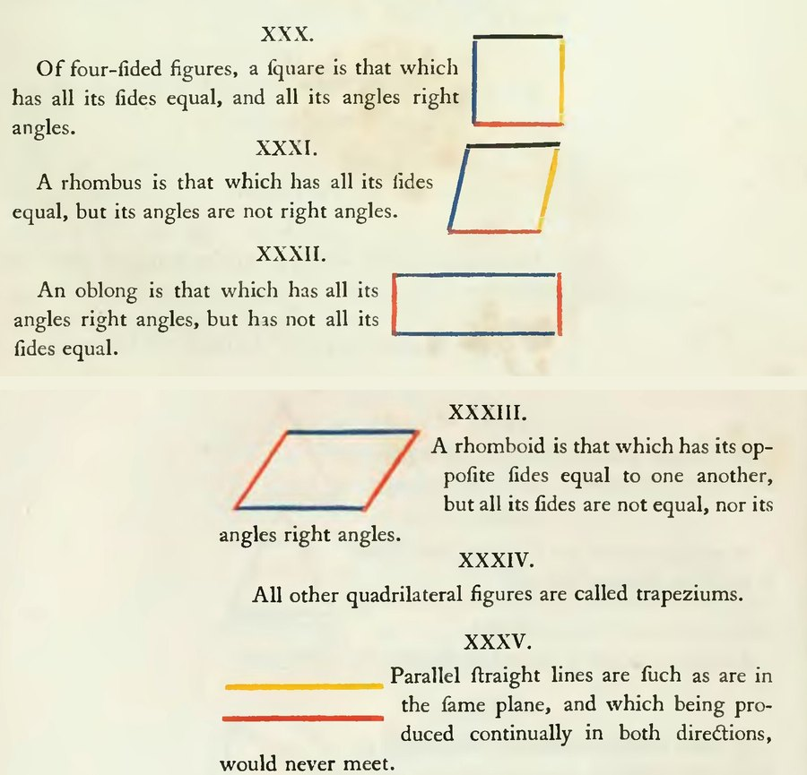
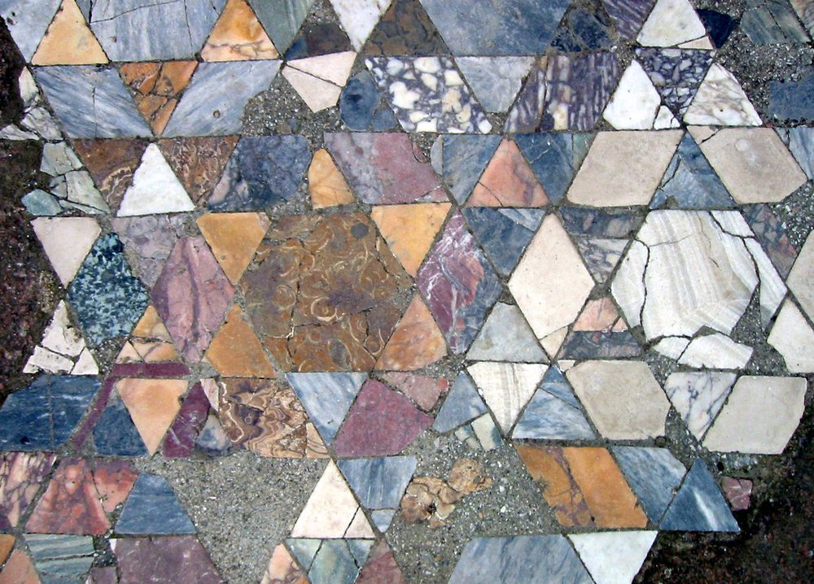

Properties of Quadrilaterals
MA.K12.MTR.2.1 Show math in many ways. MTR.5.1 Use patterns and structure. MTR.6.1 Check that answers make sense.
Today: check the sides and corners of 4-sided shapes and give each one the name that tells the most. Dimensions Math 3B, Chapter 12, Lesson 6 · Properties of Quadrilaterals

Alexandria, Egypt · about 300 BC
How can we name a 4-sided shape by its sides and corners?
Check three things: parallel sides, equal sides, square corners.
You will…
- Make 4-sided shapes on a geoboard.
- Check for parallel sides, equal sides and square corners.
- Name trapezoids, parallelograms, rectangles, rhombuses and squares.
A floor of rhombuses
This marble floor is in Herculaneum, a Roman town in Italy. In the year 79, a volcano called Mount Vesuvius buried the town in ash and mud, and the floor stayed hidden for about 1,700 years. Look at the pieces of stone. Many of them have 4 equal sides, and their corners are not square corners. Those pieces are rhombuses. Small triangles fill the spaces between them.

Euclid wrote down names for four-sided shapes, like the square and the rhombus. Builders used those same shapes to make floors.
Today's math: make 4-sided shapes, check their sides and corners, and give each one the name that tells the most.
Warm up with × 7 and × 9 facts. Type each answer, then check. You can fix any answer and check again.
Read the marks
Look at the marks on this triangle. Count the sides that are the same length, and count the square corners.
Think: Reshape the Rectangle
🔨 Do · ✏️ WriteEuclid's students stretched a band into a rectangle. What happens if they move its corners?
A geoboard with 11 rows of 11 pins. A purple band makes a rectangle. Each corner of the band has a big dot you can move to another pin.
Make 3 new shapes
Drag a corner dot to a different pin. Keep moving corners until you have made 3 new 4-sided shapes.
What stays the same?
Every shape you made is a quadrilateral: a closed shape with 4 straight sides and 4 corners. "Quad" means four.
What is a quadrilateral?
A quadrilateral is a closed shape with 4 straight sides and 4 corners. Big or small, tipped or pointy: if it has 4 straight sides and no gaps, it is a quadrilateral.
Check 1: parallel sides
Parallel sides go the same way, like train tracks. They never meet. Arrow marks show them. A quadrilateral with at least 1 pair of parallel sides is a trapezoid. With 2 pairs, it is a parallelogram.
Checks 2 and 3: equal sides and square corners
4 equal sides: rhombus. 4 square corners: rectangle. Both: square. So a square is a rectangle and a rhombus, too. We give each shape the name that tells the most.
Four ways to stay on track
Your Turn: Check Three Things
🔨 DoEuclid's students found this shape on the geoboard. Check it, then name it.
A green 4-sided shape on a geoboard. Tick marks show which sides are the same length. Every corner has a gold ring for the set square, which waits at the bottom right.
Find the parallel sides
Tap a side, then tap the side that goes the same way. Find every parallel pair.
Check the corners
Drag the set square onto each corner, one at a time, until all 4 gold rings are gone.
Name it
Drag the card with the name that tells the most into the box.
Your Turn: A Long Rectangle
🔨 DoMake a rectangle that is not a square: 2 long sides and 2 short sides.
A geoboard with 11 rows of 11 pins. Tap 4 pins to hook the band, then tap the first pin again to close it. The set square waits at the bottom right.
Make the rectangle
Tap 4 pins to make a rectangle with 2 long sides and 2 short sides. Then tap the first pin again to close the band.
Check the corners
Drag the set square onto each corner, one at a time, until all 4 gold rings are gone.
Name it
Drag the card with the name that tells the most into the box.
Ben's Square
🔨 Do · ✏️ WriteBen makes a square on the geoboard. He says, "This is a square, so it can't be a rectangle."
Ben's red square on the geoboard. Tick marks show 4 sides the same length. Each corner has a gold ring for the set square.
Check Ben's corners
Drag the set square onto each corner, one at a time, until all 4 gold rings are gone.
Count the square corners
Is it a rectangle?
A rectangle is any 4-sided shape with 4 square corners. Drag the card that answers Ben into the box.
Help Ben
Mia's Four Shapes
🔨 Do · ✏️ WriteMia draws four shapes. She says, "They're all quadrilaterals."
Mia's four blue shapes in the tray. Under them are two groups: Quadrilateral and Not a quadrilateral.
Sort Mia's shapes
Drag each shape into Quadrilateral or Not a quadrilateral.
Help Mia
On Your Own: One Pair
🔨 Do · ✏️ WriteMake a 4-sided shape with exactly 1 pair of parallel sides. Then name it.
A geoboard with 11 rows of 11 pins. Tap 4 pins to hook the band, then tap the first pin again to close it.
Make the shape
Tap 4 pins and close the band so exactly 1 pair of sides is parallel.
Show the parallel pair
Tap one of the parallel sides, then tap the side that goes the same way.
Name it
Drag the card with the name that tells the most into the box.
Tell how you know
The Family Tree
🔨 DoEvery 4-sided shape belongs to the quadrilateral family. Lower on the tree, the names tell more.
Six shape cards in the tray. Under them is a family tree with six spots: quadrilateral at the top, then trapezoid, then parallelogram, then rectangle and rhombus side by side, then square at the bottom.
Problem 1 · Fill the tree
Drag each shape card to the spot with the name that tells the most about it.
Problem 2 · The square's names
Tap every name on the tree that fits a square.
A square fits every name on the tree: it has 4 straight sides, 2 pairs of parallel sides, 4 equal sides and 4 square corners. Euclid's book names the square first of all the four-sided shapes.
Prove It
✏️ WriteProblem 3 · Prove It
Hidden Squares
Four small squares make a bigger shape. How many squares can you find in all?
Turn in your work
- Check the list below. Jobs 1 to 8 are required. The Bonus is optional.
- Press 📋 Gather my answers, then 📋 Copy. Or press 🖨️ Print or save as PDF.
- Open this lesson's assignment in Canvas.
- Paste your answers (or upload your PDF and journal photo), then press Submit.
All my answers
Your answers and your work on this page save on this device as you go.
Before you turn in
- I finished Jobs 1 to 8.
- I can tell what makes a shape a quadrilateral.
- I can check for parallel sides, equal sides and square corners.
- I can name trapezoids, parallelograms, rectangles, rhombuses and squares.
- I tried the Bonus. (optional)
Lesson 3.12.07 · Using a Compass
Next, you'll use a compass, the tool in our chapter's name, to draw circles and build shapes the way Euclid did.
String Quartet "The Lark"
Joseph Haydn wrote this quartet in 1790 for two violins, a viola and a cello. Near the start, the first violin floats up high over the others, like a lark singing in the sky. That's how the piece got its nickname.
Joseph Haydn, String Quartet in D major, Op. 64 No. 5, "The Lark" (first part). Played by the Musopen String Quartet. Public domain, via Wikimedia Commons.